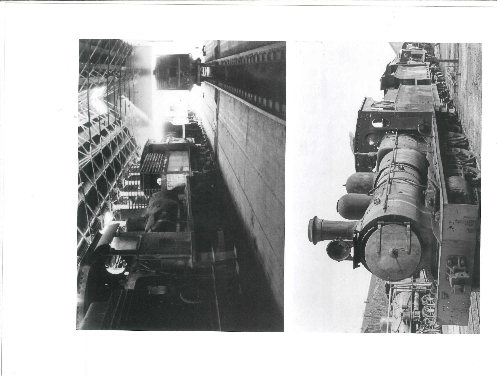

El Puente Negro
Selecciona una categoría para escuchar el audio o baja para leer la investigación

La historia y el origen

Arquitectura y estructura
La historia y el origen: El latido de una época dorada
Para comprender la verdadera dimensión del Puente Negro, es necesario viajar mentalmente a los primeros años del siglo XX, una época en la que el territorio argentino experimentaba una transformación radical impulsada por la llegada masiva del sistema ferroviario. En Cruz del Eje, el tren no significaba simplemente un medio de transporte: era el auténtico motor del progreso y de la vida cotidiana.
El origen de esta construcción se encuentra ligado directamente a la necesidad de conectar de forma eficiente la producción regional con los grandes centros urbanos. Con el correr de las décadas, este paso elevado se convirtió en un símbolo imborrable de identidad local y un monumento vivo de nuestra ciudad.
Arquitectura y estructura: La genialidad de la ingeniería
Constructivamente, el Puente Negro destaca de manera absoluta por el uso característico del hierro forjado y el acero remachado, materiales que definieron la arquitectura industrial de la época.
Su diseño de vigas metálicas en celosía fue ideado estratégicamente para repartir cargas de manera uniforme, permitiendo soportar el peso monumental y las vibraciones constantes de las locomotoras, además de resistir las crecidas de agua. Es una obra maestra de la ingeniería que perdura en el tiempo.